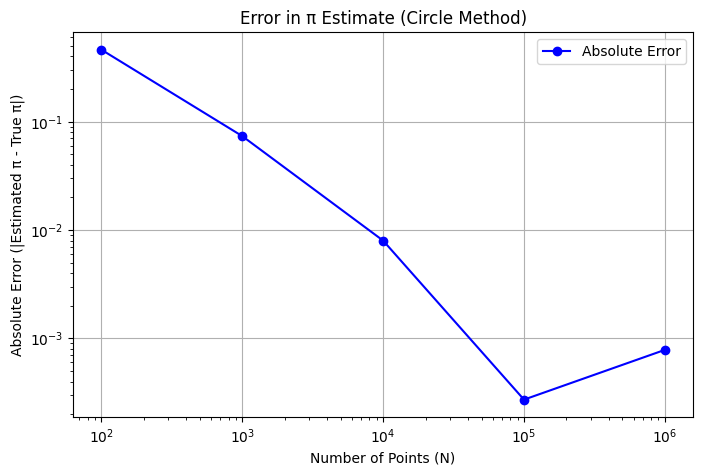
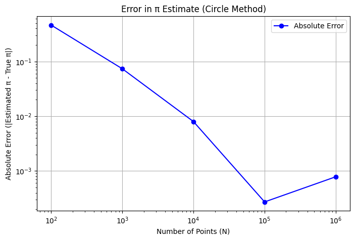

Problem 2
Estimating Pi using Monte Carlo Methods
Part 1: Estimating Pi Using a Circle
1.1 Theoretical Foundation
Notes: We can estimate \(\pi\) by using the geometric probability of points falling inside a circle inscribed in a square. Consider a unit circle (radius 1) centered at the origin, inscribed in a square with side length 2 (from \(x = -1\) to \(x = 1\), \(y = -1\) to \(y = 1\)).
- Areas:
- Area of the square: \(2 \times 2 = 4\).
- Area of the unit circle: \(\pi r^2 = \pi \cdot 1^2 = \pi\).
- Ratio: The probability that a randomly chosen point in the square lies inside the circle is the ratio of the areas: \(\(\text{Probability} = \frac{\text{Area of circle}}{\text{Area of square}} = \frac{\pi}{4}\)\)
If we generate \(N_{\text{total}}\) random points uniformly in the square and count \(N_{\text{inside}}\) points that fall inside the circle (i.e., points \((x, y)\) where \(x^2 + y^2 \leq 1\)), the ratio should approximate this probability: \(\(\frac{N_{\text{inside}}}{N_{\text{total}}} \approx \frac{\pi}{4}\)\) Thus, we can estimate \(\pi\) as: \(\(\pi \approx 4 \cdot \frac{N_{\text{inside}}}{N_{\text{total}}}\)\)
Notes: This method relies on the law of large numbers: as \(N_{\text{total}}\) increases, the ratio converges to the true probability.
1.2 Simulation and Visualization
Notes: Let’s implement this in Python, generating random points, counting those inside the circle, and visualizing the process.
import numpy as np
import matplotlib.pyplot as plt
# Set random seed for reproducibility
np.random.seed(42)
# Function to estimate pi using the circle method
def estimate_pi_circle(N):
# Generate random points in [-1, 1] x [-1, 1]
x = np.random.uniform(-1, 1, N)
y = np.random.uniform(-1, 1, N)
# Check if points are inside the unit circle (x^2 + y^2 <= 1)
distances = x**2 + y**2
inside = distances <= 1
N_inside = np.sum(inside)
# Estimate pi
pi_estimate = 4 * N_inside / N
return pi_estimate, x, y, inside
# Simulate for visualization (N = 1000 for plotting)
N_plot = 1000
pi_est, x, y, inside = estimate_pi_circle(N_plot)
# Plotting
plt.figure(figsize=(6, 6))
plt.scatter(x[inside], y[inside], c='blue', s=10, label='Inside Circle', alpha=0.6)
plt.scatter(x[~inside], y[~inside], c='red', s=10, label='Outside Circle', alpha=0.6)
# Draw the unit circle
theta = np.linspace(0, 2*np.pi, 100)
plt.plot(np.cos(theta), np.sin(theta), 'k-', label='Unit Circle')
plt.xlabel('x')
plt.ylabel('y')
plt.title(f'Circle Method (N = {N_plot}, Estimated π = {pi_est:.4f})')
plt.axis('equal')
plt.legend()
plt.grid(True)
plt.show()
 Notes on Code:
- Simulation: Generates \(N\) random points in a 2x2 square, checks if they’re inside the unit circle, and estimates \(\pi\).
- Visualization: Plots points inside the circle in blue, outside in red, and draws the unit circle in black.
Notes on Code:
- Simulation: Generates \(N\) random points in a 2x2 square, checks if they’re inside the unit circle, and estimates \(\pi\).
- Visualization: Plots points inside the circle in blue, outside in red, and draws the unit circle in black.
1.3 Analysis of Convergence
Notes: Let’s investigate how the estimate improves with more points and analyze the convergence rate.
# Test convergence with increasing N
N_values = [100, 1000, 10000, 100000, 1000000]
pi_estimates_circle = []
errors_circle = []
for N in N_values:
pi_est, _, _, _ = estimate_pi_circle(N)
pi_estimates_circle.append(pi_est)
errors_circle.append(abs(pi_est - np.pi))
# Plot convergence
plt.figure(figsize=(8, 5))
plt.semilogx(N_values, pi_estimates_circle, 'bo-', label='Estimated π')
plt.axhline(np.pi, color='red', linestyle='--', label='True π')
plt.xlabel('Number of Points (N)')
plt.ylabel('Estimated π')
plt.title('Convergence of π Estimate (Circle Method)')
plt.grid(True)
plt.legend()
plt.show()
# Plot error
plt.figure(figsize=(8, 5))
plt.loglog(N_values, errors_circle, 'bo-', label='Absolute Error')
plt.xlabel('Number of Points (N)')
plt.ylabel('Absolute Error (|Estimated π - True π|)')
plt.title('Error in π Estimate (Circle Method)')
plt.grid(True)
plt.legend()
plt.show()
 

Notes: - Convergence: The estimate approaches \(\pi \approx 3.14159\) as \(N\) increases. - Error: The error decreases as \(N\) increases, roughly following a \(1/\sqrt{N}\) trend (typical for Monte Carlo methods, due to the standard error of the proportion being \(\sqrt{\frac{p(1-p)}{N}}\), where \(p = \pi/4\)). - Computational Considerations: The method is simple but requires many points for high accuracy. Computation time scales linearly with \(N\), but memory usage can become significant for very large \(N\).
Part 2: Estimating Pi Using Buffon’s Needle
2.1 Theoretical Foundation
Notes: Buffon’s Needle problem involves dropping a needle of length \(L\) onto a plane with parallel lines spaced a distance \(D\) apart. We estimate \(\pi\) based on the probability that the needle crosses a line.
- Setup: Assume \(L \leq D\) for simplicity (if \(L > D\), the needle could cross multiple lines, complicating the analysis). The needle’s position is defined by:
- \(Y\): The y-coordinate of the needle’s center, uniformly distributed between 0 and \(D\).
- \(\theta\): The angle of the needle relative to the horizontal, uniformly distributed between 0 and \(\pi\).
- Crossing Condition: The needle crosses a line if the vertical projection of the needle extends beyond the nearest line. The y-coordinate of the needle’s endpoints are at \(y_{\text{center}} \pm \frac{L}{2} \sin\theta\). A crossing occurs if:
- The nearest line below is at \(y = \text{floor}(Y/D) \cdot D\).
- The needle extends below this line: \(Y - \frac{L}{2} \sin\theta < \text{floor}(Y/D) \cdot D\), or above the next line.
- Probability: For \(L \leq D\), the probability of crossing a line is derived via integration over all possible positions and angles: \(\(P(\text{crossing}) = \frac{2L}{\pi D}\)\)
- Estimation: If we drop the needle \(N_{\text{total}}\) times and observe \(N_{\text{cross}}\) crossings, the probability is approximately: \(\(\frac{N_{\text{cross}}}{N_{\text{total}}} \approx \frac{2L}{\pi D}\)\) Solving for \(\pi\): \(\(\pi \approx \frac{2L N_{\text{total}}}{D N_{\text{cross}}}\)\)
Notes: We’ll use \(L = D = 1\) for simplicity, so \(P = \frac{2}{\pi}\), and \(\pi \approx \frac{2 N_{\text{total}}}{N_{\text{cross}}}\).
2.2 Simulation and Visualization
Notes: Let’s simulate Buffon’s Needle and visualize the needle drops.
# Function to estimate pi using Buffon's Needle
def estimate_pi_buffon(N, L=1, D=1):
# Generate random positions and angles
y_centers = np.random.uniform(0, D, N) # y-coordinate of needle center
angles = np.random.uniform(0, np.pi, N) # angle of needle
# Check for crossings
crossings = y_centers - (L/2) * np.sin(angles) < 0 # Simplified for D=1, y_centers in [0, 1]
N_cross = np.sum(crossings)
# Estimate pi
if N_cross == 0: # Avoid division by zero
return float('inf'), y_centers, angles
pi_estimate = (2 * L * N) / (D * N_cross)
return pi_estimate, y_centers, angles
# Simulate for visualization (N = 100 for plotting)
N_plot = 100
pi_est, y_centers, angles = estimate_pi_buffon(N_plot)
# Plotting
plt.figure(figsize=(8, 4))
for i in range(-1, 2):
plt.axhline(i, color='black', linestyle='--') # Parallel lines at y = -1, 0, 1
# Plot needles
for i in range(N_plot):
y_c = y_centers[i]
theta = angles[i]
x = np.array([-0.5, 0.5]) # Needle length = 1
y = y_c + (x * np.sin(theta)) # y-coordinates of needle endpoints
color = 'blue' if (y_c - 0.5 * np.sin(theta) < 0) else 'red'
plt.plot(x, y, color=color, alpha=0.5)
plt.xlabel('x')
plt.ylabel('y')
plt.title(f'Buffon\'s Needle (N = {N_plot}, Estimated π = {pi_est:.4f})')
plt.xlim(-1, 1)
plt.ylim(-1.5, 1.5)
plt.grid(True)
plt.show()
Notes on Code: - Simulation: Drops \(N\) needles, computes if they cross a line (for \(D=1\), a crossing occurs if \(y_{\text{center}} - \frac{L}{2} \sin\theta < 0\)), and estimates \(\pi\). - Visualization: Shows the needles (blue if crossing, red if not) with parallel lines at \(y = -1, 0, 1\).
2.3 Analysis of Convergence
Notes: Let’s compare the convergence of Buffon’s Needle to the circle method.
# Test convergence with increasing N
pi_estimates_buffon = []
errors_buffon = []
for N in N_values:
pi_est, _, _ = estimate_pi_buffon(N)
pi_estimates_buffon.append(pi_est if pi_est != float('inf') else np.nan)
errors_buffon.append(abs(pi_est - np.pi) if pi_est != float('inf') else np.nan)
# Plot convergence
plt.figure(figsize=(8, 5))
plt.semilogx(N_values, pi_estimates_circle, 'bo-', label='Circle Method')
plt.semilogx(N_values, pi_estimates_buffon, 'go-', label='Buffon\'s Needle')
plt.axhline(np.pi, color='red', linestyle='--', label='True π')
plt.xlabel('Number of Iterations (N)')
plt.ylabel('Estimated π')
plt.title('Convergence of π Estimates')
plt.grid(True)
plt.legend()
plt.show()
# Plot error
plt.figure(figsize=(8, 5))
plt.loglog(N_values, errors_circle, 'bo-', label='Circle Method')
plt.loglog(N_values, errors_buffon, 'go-', label='Buffon\'s Needle')
plt.xlabel('Number of Iterations (N)')
plt.ylabel('Absolute Error (|Estimated π - True π|)')
plt.title('Error in π Estimates')
plt.grid(True)
plt.legend()
plt.show()
Notes: - Convergence: Buffon’s Needle also converges to \(\pi\), but more slowly and with higher variance than the circle method. - Error: The error in Buffon’s Needle decreases as \(1/\sqrt{N}\), but the constant is larger due to the lower probability of crossing (\(P = 2/\pi \approx 0.637\) vs. \(\pi/4 \approx 0.785\) for the circle method), leading to more noise. - Comparison: The circle method is more efficient (fewer iterations for the same accuracy) because it has a higher “signal” (probability of being inside the circle) and simpler computations.
4. Summary and Comparison
Notes: - Accuracy: - Circle Method: More accurate for the same \(N\) due to a higher probability of “success” (point inside the circle). - Buffon’s Needle: Less accurate, with more variability, because the crossing probability is lower. - Computational Efficiency: - Circle Method: Requires simple distance calculations (\(x^2 + y^2 \leq 1\)). - Buffon’s Needle: Involves trigonometric functions (\(\sin\theta\)), making it slightly more computationally intensive. - Convergence Rate: Both methods have errors that decrease as \(1/\sqrt{N}\), but the circle method converges faster due to lower variance in the estimator.
Notes: The circle method is generally preferred for estimating \(\pi\) due to its simplicity and efficiency, but Buffon’s Needle provides a fascinating historical perspective and connects to geometric probability in a unique way.
Rendering and Running in VS Code
- File: Save as
estimate_pi_monte_carlo.md. - Rendering: Use the "Markdown+Math" extension; preview with
Ctrl+Shift+Vto see equations like \(\pi\) and \(\(P\)\). - Code: Extract to
estimate_pi_monte_carlo.pyor use a.ipynbwith the "Jupyter" extension. - Requirements: Install
numpyandmatplotlib(pip install numpy matplotlib).
Output Notes
- Circle Method Plot: Shows points inside (blue) and outside (red) the unit circle, with the estimated \(\pi\).
- Buffon’s Needle Plot: Shows needles (blue if crossing, red if not) with parallel lines, and the estimated \(\pi\).
- Convergence Plots: Compare how both methods approach \(\pi\) and their error trends.
This solution provides a clear, comprehensive exploration of Monte Carlo methods for estimating \(\pi\), with simulations, visualizations, and analysis. Let me know if you’d like to adjust parameters or explore other methods!